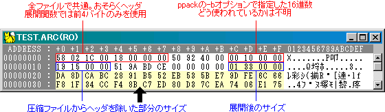

|
||
『ppack』で圧縮展開ppackは、P/ECE用の実行ファイルである.pexファイルを作成するためのソフトですが、その他の一般的なファイルも圧縮することができます。P/ECE HAND BOOK Vol.1の開発Tips「データの圧縮展開を利用したい」に書かれている通り、
とすると、test.txtがtest.arcに圧縮されます。 |
||
|
これを展開するためのソースコードも開発Tipsに掲載されていますが、使用方法の説明がいささか不親切です。そんな中、先日P/ECE HAND BOOK 掲示板に、まかべひろし氏による書き込みがありました。 圧縮の方法につきましては、Vol.1に書かれている通り、ppack.exeを使用して行います。 これにより、圧縮データをメモリに配置し、展開後のデータサイズ分だけメモリを確保すれば、展開できるということが分かりました。あらかじめ展開後のサイズが分かっているデータ（例えば、自分のプログラムでのみ読み込むようなデータ）についてはこれで対応できます。しかし、展開後のサイズが分からなければ、メモリの確保が上手くいきません。 解決策として、たとえばP/ECE HAND BOOK Vol.2に収録されているゲームでは、独自のファイルパック形式を用いて、圧縮ファイルと非圧縮ファイルを混在させたパックファイル内に各ファイルの展開後のサイズを保持しています。圧縮ツールおよび展開関数のソースも添付されているので、参考にするといいでしょう。 |
||
|
さて、圧縮されたファイルをバイナリエディタで解析してみましょう。他にもいくつかのファイルを圧縮して解析してみたところ、以下に示す特徴を読み取ることができました。
 これより、先頭から001Ch=28バイト目のデータをlong型にキャストすることで、展開後のサイズを取得できることが分かります（ppack_getExpandSize(unsigned char* arcData)関数）。つまりは、先ほどの例のような加工を施さなくても圧縮ファイル単体でも適切なサイズのメモリを確保して展開することが可能になります。 |
||
『pvnspack』のフォーマット独自の圧縮ファイルパック形式『pvnspack』のフォーマットについて簡単に説明します。『pvnspack』で作成される圧縮パックファイルのフォーマットは、P/ECE標準のパックファイル（標準拡張子「.fpk」）のフォーマットと全く同じです。但しP/ECE標準のパックファイルはヘッダが
になっているのに対し、『pvnspack』で作成される圧縮パックファイルはヘッダが
になっています。P/ECE標準のパックファイルについては、tools\filepack\デコーダsrc\filepack.cを参照下さい。 |
||